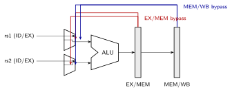
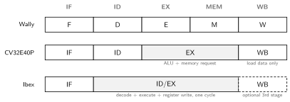

A pipeline overlaps the execution of consecutive instructions the way an assembly line overlaps cars: each instruction occupies one stage per cycle, and every stage works on a different instruction. Pipelining is the single largest lever on the Iron Law from History of Computing: it cuts cycle time by the pipeline depth while keeping CPI near 1. This note builds the classic 5-stage RISC pipeline and its hazards; deeper machines follow in Out of Order Execution and Register Renaming and Advanced Superscalar Architectures.
Single-cycle. Every instruction fetches, decodes,
executes, accesses memory, and writes back in one long combinational
pass; the clock period must cover the slowest instruction. Budget for
lw (the critical path):
| Element | Delay |
|---|---|
| I-mem read | 250 ps |
| register file read | 150 ps |
| ALU (address) | 200 ps |
| D-mem read | 250 ps |
| register file write | 150 ps |
| Total () | 1000 ps |
An R-type instruction needing only 600 ps still waits the full 1000 ps: CPI = 1 but is terrible, and the adder, memories, and register file each sit idle most of the cycle.
Multicycle. Break execution into steps (one per cycle), so shrinks to the slowest step and each instruction takes only the cycles it needs (3-5). Hardware is reused across steps, but CPI rises to ~4 and the machine still runs one instruction at a time.
Pipelined. Keep the multicycle stage boundaries but start a new instruction every cycle. Ideal: CPI = 1 and ps.
| Stage | Work | For lw x1, 8(x2) |
|---|---|---|
| IF | fetch instruction at PC, PC+4 | read I-mem |
| ID | decode, read register file | read x2 |
| EX | ALU operation | compute x2+8 |
| MEM | data memory access | read D-mem |
| WB | write result to register file | write x1 |
The shaded pipeline registers (IF/ID, ID/EX, EX/MEM, MEM/WB) are ordinary edge-triggered registers from Sequential Circuits; they carry each instruction’s data and control signals down the pipe, so five instructions coexist, one per stage. Control is decoded once in ID and travels with the instruction.
Pipelining arithmetic. For instructions on a -stage pipeline: cycles (fill and drain cost ). Speedup over single-cycle approaches but never reaches it:
A hazard is a situation where the next instruction cannot safely execute in its scheduled cycle.
Structural: two instructions need the same hardware in the same cycle. A single unified memory would collide IF (instruction fetch) with MEM (load/store) every load; split I/D memories or caches (the modified Harvard organization in History of Computing) remove it. The register file is read in ID and written in WB in the same cycle; making writes happen in the first half-cycle and reads in the second half (write-first) resolves it for free and shortens the RAW distance by one.
Data: an instruction needs a value that an older, still-in-flight instruction has not yet written (read-after-write, RAW). Write-after-read and write-after-write cannot happen in this in-order 5-stage pipe (all writes are in WB, in order); they become real in Out of Order Execution and Register Renaming.
Control: the next PC depends on a branch that has not resolved.
add x1, x2, x3 # x1 written in WB (cycle 5)
sub x4, x1, x5 # x1 needed in EX (cycle 4): 2 cycles too earlyInterlock (stall). Hazard-detection logic in ID
compares the source registers rs1/rs2 against
destination registers in flight (ID/EX, EX/MEM). On a match it freezes
PC and IF/ID and injects a bubble (a NOP’s control signals) into ID/EX.
Correct but slow: two bubbles for the case above.
Forwarding (bypassing). The value exists in the datapath (ALU output at end of EX) long before WB writes it. Route it back:

Muxes at the ALU inputs select among the register-file value, the
EX/MEM result, and the MEM/WB result; the forwarding unit picks the
youngest matching producer (EX/MEM has priority over MEM/WB),
ignoring x0. With full forwarding, back-to-back ALU
dependences cost zero cycles.
The load-use hazard survives forwarding. A load’s data appears at the end of MEM, but a dependent instruction in the next slot needs it at the start of its EX, one stage earlier. One bubble is unavoidable:
The compiler hides it by scheduling an independent instruction into the slot after every load; when it cannot, the interlock inserts the bubble (early MIPS instead documented the slot and let wrong code be wrong, hence “Microprocessor without Interlocked Pipeline Stages”).
Forwarding moves a value backward in space (between stages), never backward in time. The load’s data physically does not exist until the SRAM read completes at the end of MEM; the dependent EX needed it one cycle before that moment. No wire can deliver a value before it is computed, so the bubble is fundamental; the only cures are scheduling around it or moving the cache access earlier (which lengthens the cycle).
The branch outcome (beq compare) and target are known in
EX (cycle 3), but IF needed the next PC in cycle 2. Naively every taken
branch costs 2 bubbles (with branch resolution in EX; 3 stages of fetch
are wrong if resolved in MEM).
Mitigations, in increasing effectiveness:
Effective CPI example: 20% of instructions are branches, 60% taken, 2-cycle taken penalty, plus load-use stalls on 25% of the 25% that are loads:
A “5x speedup” pipeline delivers ~3.8x. Reducing the branch penalty and filling load slots is where the next 30% lives.
Five stages is a design point, not a law. Three production open-source RISC-V cores show the depth knob at work:

| Ibex | CV32E40P | Wally | |
|---|---|---|---|
| Stages | 2 (IF, ID/EX) + optional WB | 4 (IF, ID, EX, WB) | 5 (F, D, E, M, W) |
| Taken branch | 2 cycles (1 with a dedicated target adder in IF) | 3-4 cycles, every time (no predictor) | 1 with prediction |
| Load-use | stall in the 3-stage config | 1 cycle | 1 cycle |
| Target | secure microcontroller (OpenTitan) | embedded DSP | RV64GC, boots Linux |
StallF, InstrD, PCE),
scaling from RV32E to an RV64GC application core.Each stage added buys a shorter critical path and costs pipeline registers, forwarding paths, and branch penalty. A 2-stage secure microcontroller and a 20-stage laptop core sit at opposite ends of the same trade: the fewer the stages, the less speculation machinery is worth building, which is why CV32E40P carries no branch predictor at all: at 4 stages, the fixed 3-cycle penalty is cheaper than the predictor that would remove it.
A page fault in MEM, an illegal opcode in ID, and an external interrupt can all be pending at once, in different stages. The pipeline handles this by tagging, not acting: fault flags ride the pipeline registers and are honored only at the commit point, giving precise state. Mechanics are in Exceptions.
Author: Sai Govardhan (saigov14@gmail.com)
Courses
Textbooks
Standards, Papers, and Wikipedia
Microarchitecture References
MIT License
Copyright (c) 2025 Sai Govardhan (saigov14@gmail.com)
Permission is hereby granted, free of charge, to any person obtaining a copy
of this software and associated documentation files (the "Software"), to deal
in the Software without restriction, including without limitation the rights
to use, copy, modify, merge, publish, distribute, sublicense, and/or sell
copies of the Software, and to permit persons to whom the Software is
furnished to do so, subject to the following conditions:
The above copyright notice and this permission notice shall be included in all
copies or substantial portions of the Software.
THE SOFTWARE IS PROVIDED "AS IS", WITHOUT WARRANTY OF ANY KIND, EXPRESS OR
IMPLIED, INCLUDING BUT NOT LIMITED TO THE WARRANTIES OF MERCHANTABILITY,
FITNESS FOR A PARTICULAR PURPOSE AND NONINFRINGEMENT. IN NO EVENT SHALL THE
AUTHORS OR COPYRIGHT HOLDERS BE LIABLE FOR ANY CLAIM, DAMAGES OR OTHER
LIABILITY, WHETHER IN AN ACTION OF CONTRACT, TORT OR OTHERWISE, ARISING FROM,
OUT OF OR IN CONNECTION WITH THE SOFTWARE OR THE USE OR OTHER DEALINGS IN THE
SOFTWARE.